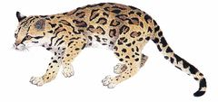
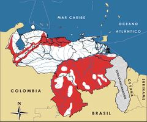

Leopardus wiedii
| Tigrito | |
|---|---|
|  | |
| Riesgo de extinción | |
 Vulnerable (UICN) | |
| Clasificación científica | |
| Reino: | Animalia |
| Filo: | Chordata |
| Clase: | Mammalia |
| Orden: | Carnivora |
| Familia: | Felidae |
| Género: | Leopardus |
| Especie: | Leopardus wiedii |
| Nombre binomial | |
|
Leopardus wiedii Schinz, 1821 | |
| Distribución | |
|
 Mapa de distribución de Leopardus wiedii | |
Contenido
Información de Evaluación
- Categoría y Criterio Regional: Vulnerable A2cd
- Fecha de Evaluación Regional: 2015
- Evaluadores: Jesús Morales-Campos y Ariany García-Rawlins
- Categoría y Criterio Global: Casi Amenazado
Justificación
Evaluaciones Previas
1999: Vulnerable (VU)
2008: Vulnerable (VU)
Información General
Nombres comunes
Tigrito, tigrillo, cunaguaro, gato pintado, margay, tree ocelot.
Notas taxonómicas
Sinónimos
Felis wiedii
Descripción
Felino perteneciente al grupo de los pequeños gatos manchados, caracterizado por tener ojos grandes, cabeza pequeña y una cola larga, que puede representar hasta 45% de su largo total (Linares 1998, de Oliveira 1998). Los adultos pueden pesar de 3-5 kg, con una longitud de la cabeza hasta la base de la cola entre 43 y 79 cm. Su cola alcanza de 30 a 51 cm y es más larga que su extremidad posterior. Tiene un pelaje corto, suave y denso, de coloración parda amarillenta en el dorso y blanca en el vientre, con manchas negras alargadas e irregulares o en forma de rosetas. Al igual que los otros felinos de su tipo, el patrón de manchas es único en cada individuo. Su cabeza es similar en color al dorso, con el pelaje del cuello dirigido hacia adelante. De esta especie no se han registrado ejemplares melánicos (Eisenberg 1989, Bisbal 1992, Linares 1998, de Oliveira 1998). Suele ser confundido con el cunaguaro (L. pardalis), aunque es más pequeño y el largo de su cola mucho mayor, así como con el gato de monte (L. tigrinus), siendo este último más pequeño con un pelaje del cuello que crece dirigido hacia atrás (Mondolfi 1986, Linares 1998, de Oliveira 1998). Tiene la capacidad de rotar los tobillos, por lo que resulta muy hábil para trepar, y se considera tanto terrestre como arborícola. Es un animal solitario y territorial, con hábitos nocturnos y crepusculares. Se alimenta principalmente de pequeños mamíferos, aves y reptiles, que caza al acecho en el suelo o en los árboles (Trebbau 1976, Mondolfi 1986, Eisenberg 1989, Bisbal 1992, Linares 1998, de Oliveira 1998). La especie era conocida como Felis wiedii. En la actualidad se reconocen diez subespecies de las cuales solo L. wiedii vigens se encuentra en el territorio nacional (Linares 1998, de Oliveira 1998).
Distribución
A nivel global se distribuye ampliamente, encontrándose desde México hasta el norte de Argentina y Uruguay; reportándose anteriormente incluso en el extremo sur de Texas. Ocupa sobre todo áreas de tierras bajas, en un intervalo altitudinal que va desde el nivel del mar hasta los 1500 m, aunque se ha registrado por encima de los 3000 m en los Andes (Bisbal 1989, Emmons 1990, Bisbal 1992, Nowell y Jackson 1996, Clavijo y Ramírez 2009). En Venezuela su distribución es disjunta, ocupando un área amplia al sur del Orinoco, así como las zonas bajas de la cordillera de los Andes, la sierra de Perijá y la región central de la Cordillera de la Costa al norte del Orinoco, por lo que se encuentra en los estados Bolívar, Amazonas, Falcón, Yaracuy, Carabobo, Aragua y Miranda (Mondolfi 1976, Bisbal 1989, Bisbal 1992, Ochoa-G. et al. 2005). Un registro en la península de Araya, estado Sucre, pudiera indicar la presencia de otra población aislada (Profauna 1993). Se considera uno de los felinos americanos más fuertemente asociado a ecosistemas boscosos, con énfasis en bosques húmedos, semideciduos y deciduos, prefiriendo aquellos con bajas perturbaciones antrópicas (Nowell y Jackson 1996, de Oliveira 1998). En nuestro país se ha registrado sobre todo en bosques lluviosos entre 100 y 900 m, así como en bosques nublados por encima de 1200 m (Bisbal 1989, Linares 1998, Isasi-Catalá 2012). También se ha reportado en bosques secundarios, así como en plantaciones de café y cacao, donde aún se mantiene suficiente cobertura boscosa (Mondolfi 1986).
- Sistema: Terrestre
- Bioregión:
- Intervalo altitudinal (m): 100-1500
- Endémica: No
Situación
Se considera una especie poco común y especialista de hábitat, sin embargo, son pocos los datos poblacionales existentes, por lo que la evaluación de su estado de conservación es limitado (Nowell y Jackson 1996, de Oliveira 1998, Payán Garrido et al. 2008). Por su fuerte asociación a ecosistemas boscosos, es posible que sus poblaciones estén siendo afectadas en toda su área de distribución, debido en esencia a los procesos de pérdida y degradación de la cobertura boscosa (Bisbal 1992, Nowell y Jackson 1996, Payán Garrido et al. 2008, Clavijo y Ramírez 2009). En Venezuela se estima que 22% de la cobertura vegetal ha sido transformada (Oliveira-Miranda et al. 2010c), principalmente las áreas boscosas, por lo que se supone una disminución actual de la distribución de la especie. La situación de las poblaciones ubicadas al norte del Orinoco es alarmante, ya que pudieran encontrarse en franca reducción y aislamiento, dada la intensa actividad urbana, agrícola e industrial de la región. Al sur del país, la presencia de grandes áreas boscosas y la incidencia de una menor presión antrópica, pudiera significar un mejor estado de las poblaciones, al menos a corto plazo. Se ha reportado en algunas áreas protegidas, como los parques nacionales Henri Pittier y Guatopo (Mondolfi 1986, Isasi-Catalá 2012), las cuales pudieran ser clave para su conservación. Sin embargo, no se cuenta con estudios que evalúen la viabilidad de sus poblaciones. Es poca la información disponible sobre la estructura genética de Leopardus wiedii, por lo que se desconoce el efecto que las extinciones locales pudieran estar generando sobre su variabilidad genética (Eizirik et al. 1998). A escala global se ha clasificado en la categoría Casi Amenazado (Payán Garrido et al. 2008). En Argentina se considera En Peligro, en Ecuador Vulnerable, en Perú en Situación Indeterminada (Datos Insuficientes), y Casi Amenazada en Colombia (Pulido 1991, Bertonatti y González 1993, Rodríguez-Mahecha et al. 2006, Tirira 2011).
- EOO (km2): Temporalmente sin información
- AOO (km2): Temporalmente sin información
- Tendencia Poblacional: Decreciendo
Amenazas
Como la mayoría de los felinos manchados, hasta principios de los años 1980 la especie estuvo amenazada por la intensa cacería comercial y deportiva o de trofeo (Mondolfi 1986, Nowell y Jackson 1996, de Oliveira 1998, Clavijo y Ramírez 2009). L. wiedii se ha considerado uno de los felinos más impactados por la industria peletera, reportándose un total de 125.747 pieles comercializadas entre 1976 y 1985 según la Convención sobre el comercio internacional de especies amenazadas de fauna y flora silvestres (de Oliveira 1998). Aunque Venezuela fue uno de los países con menos pieles puestas en el mercado, los registros no son confiables. La mayoría de las pieles de Leopardus decomisadas fueron etiquetadas como de cunaguaro, sin diferenciar entre las tres especies del género en el país (Bisbal 1992), por tanto, se desconoce el verdadero impacto que esta intensa explotación produjo en sus poblaciones. Aunque su cacería se ha controlado y reducido, el felino sigue siendo perseguido ilegalmente (Nowell y Jackson 1996, de Oliveira 1998, Payán Garrido et al. 2008, Clavijo y Ramírez 2009). En la actualidad su principal amenaza es la pérdida y destrucción de hábitat (Nowell y Jackson 1996, de Oliveira 1998, Payán Garrido et al. 2008). En Venezuela, las actividades humanas han disminuido las formaciones arbóreas a tan solo 54% de la superficie del país, sobre todo en el norte del Orinoco (Oliveira-Miranda et al. 2010c), por lo que gran parte de los bosques que habitaba el felino han sido perturbados. En esta región la posible reducción y aislamiento de las poblaciones las hace más vulnerables a desaparecer por factores ambientales, demográficos y genéticos (Nowell y Jackson 1996, Eizirik et al. 1998). La pérdida de hábitat y la cacería indiscriminada pudieran estar afectando a las poblaciones de sus presas, restringiéndose así la disponibilidad de alimento necesario para la sobrevivencia y reproducción de la especie. Esta disminución suele ser la principal causa de cacería por conflicto de otros felinos (Nowell y Jackson 1996, Clavijo y Ramírez 2009), al sustituir las presas naturales por animales domésticos, sin embargo, esto ha sido poco reportado para el tigrito.
Conservación
Su comercio internacional está regulado, ya que el felino se halla incluido en el Apéndice I de la Convención sobre el comercio internacional de especies amenazadas de fauna y flora silvestres (Cites 2014). En Venezuela su cacería se encuentra prohibida de modo indefinido, ya que L. wiedii fue declarada en veda, así como Especie en Peligro de Extinción (Venezuela 1996a, Venezuela 1996b). A la fecha, es necesario garantizar el cumplimiento de la prohibición de caza del mamífero y sus presas naturales, en particular en las áreas protegidas. A fin de mejorar la evaluación de su situación y desarrollar planes de manejo para su conservación, se requiere solventar los vacíos de información existentes (Nowell y Jackson 1996). En esa dirección es fundamental desarrollar estudios sobre su distribución, estado poblacional y amenazas en toda su área de vida, haciendo especial énfasis en la investigación de las poblaciones más vulnerables ubicadas al norte del Orinoco. Principalmente para estas poblaciones, es recomendable incluir análisis genéticos para determinar la variabilidad, tanto cromosómica como de ADN (Hsu et al. 1963, Eizirik et al. 1998). Las áreas protegidas, como estrategia de conservación in situ, pudieran ser clave para la conservación de la especie (Nowell y Jackson 1996, Payán Garrido et al. 2008), principalmente al norte del Orinoco, por tanto evaluar su efectividad y reforzar su manejo es prioritario. Además, la creación de una red interconectada de unidades de protección pudiera ser fundamental para garantizar el mantenimiento de poblaciones viables de este felino a largo plazo. Las estrategias de conservación ex situ, como la cría en cautiverio, pudieran servir para reforzar y restaurar las poblaciones naturales, pero su factibilidad debe ser evaluada. Hay que fortalecer los planes de protección futuros con programas de educación ambiental que hagan énfasis en las diferencias entre las especies del género Leopardus y refuercen el valor ecológico y cultural de la especie, para mejorar la percepción humana sobre ella y reducir su cacería (Núñez 1992).
Autorías
Autores originales
Emiliana Isasi-Catalá, Fracisco Bisbal, Ernesto O. Boede y Tatiana Caldera
Colaboradores
Ilustrador
Michel Lecoeur
Referencias
- Bertonatti, C. y González, F. (1993). Lista de vertebrados argentinos amenazados de extinción (2a ed.). Boletín Técnico de la Fundación Vida Silvestre ArgentinaBuenos Aires, Argentina. 35 pp.
- Bisbal, F. (1989). Distribution and habitat association of the carnivores of Venezuela. Páginas: 339-362. En: Redford, K. H. y Eisenberg, J. F. (Eds.). Advances in Neotropical Mammalogy. The Sandhill Crane Press. Gainesville, Florida, USA.
- Bisbal, F. (1992). Estado de los pequeños félidos de Venezuela. Páginas: 83-94. En: Felinos de Venezuela: Biología, Ecología y Conservación. Memorias del 1º Simposio Organizado por Fudeci, 1-4 sep. 1991. Caracas, Venezuela.
- Cites. (2014). Apéndices I, II y III (válidos desde el 14 de septiembre de 2014). Convención sobre el Comercio Internacional de Especies Amenazadas de Fauna y Flora Silvestres (CITES). 47 pp.
- Clavijo, A. y Ramírez, G. F. (2009). Taxonomía, distribución y estado de conservación de los felinos suramericanos: revisión monográfica. Boletín Científico Centro de Museos. Museo de Historia Natural 13: 43-60.
- de Oliveira, T. G., Eizirik, E., Schipper, J., Valderrama, C., Leite-Pitman, R. y Payan, E. (2008). Leopardus tigrinus. The IUCN Red List of Threatened Species. Version 2013.2. Disponible en www.iucnredlist.org, consultada el 24 de marzo de 2014.
- Eisenberg, J. F. (1989). Mammals of the Neotropics. The Northern Neotropics (Vol. 1). Panamá, Colombia, Venezuela, Guyana, Suriname, French Guiana. University of Chicago Press. Chicago y Londres. 449 pp.
- Eizirik, E., Bonatto, S. L., Johnson, W. E., Crawshaw Jr., P. G., Vié, J. C., Brousset, D. M., O'Brien, S. J. y Salzano, F. M. (1998). Phylogeographic patterns and evolution of the mitochondrial DNA control region in two neotropical cats (Mammalia, Felidae). Journal of Molecular Evolution 47: 613-624.
- Emmons, L. H. (1990). Neotropical Rainforest Mammals, a field guide. University of Chicago Press. Chicago y Londres. 281 pp.
- Isasi-Catalá, E. (2012). Estudio del estado de conservación del yaguar (Panthera onca) en el Parque Nacional Guatopo. Tesis Doctoral, Universidad Simón Bolívar. Sartenejas, Venezuela.
- Linares, O. J. (1998). Mamíferos de Venezuela. Sociedad conservacionista Audubon. Caracas. 691 pp.
- Isasi-Catalá, E., Bisbal, F., Boede, E. O. y Caldera, T. (2015). Tigrito,Leopardus wiedii. En: J.P. Rodríguez, A. García-Rawlins y F. Rojas-Suárez (eds.) Libro Rojo de la Fauna Venezolana. Cuarta edición. Provita y Fundación Empresas Polar, Caracas, Venezuela. Recuperado de: animalesamenazados.provita.org.ve/content/tigrito Vie, 09/03/2018 - 08:55
- Mondolfi, E. (1976). Fauna Silvestre de los Bosques Húmedos de Venezuela. Páginas: 113-181. En: Hamilton, L. S., Steyermark, J., Veillon, J. P. y Mondolfi, E. (Eds.). Conservación de los Bosques Húmedos de Venezuela. Sierra Club, Consejo de Bienestar Rural. Caracas.
- Mondolfi, E. (1986). Notes on the biology and status of small wild cats in Venezuela. Páginas: 125-146. En: Miller, C. D. y Everet, D. D. (Eds.). Cats of the world: Biology, Conservation and Management. National Wildlife Federation. Washington, D. C.
- Nowell, K. y Jackson, P. (Eds.) (1996). Status survey and conservation action plan, wild cats. IUCNSSC Cat Specialist Group. Gland, Suiza.
- Núñez, R. (1992). Educación ambiental para la conservación de los felinos de Venezuela. Páginas: 283-290. En: Felinos de Venezuela: Biología, Ecología y Conservación. Memorias del 1º Simposio Organizado por Fudeci, 1-4 de sep. 1991. Caracas, Venezuela: Fudeci.
- Ochoa-G., J., Bevilacqua, M. y García, F. (2005). Evaluación ecológica rápida de las comunidades de mamíferos en cinco localidades del Delta del Orinoco, Venezuela. Interciencia 30(8): 466-475.
- Oliveira-Miranda, M. A., Huber, O., Rodríguez, J. P., Rojas-Suárez, F., De Oliveira-Miranda, R., Zambrano-Martínez, S. y Giraldo Hernández, D. (2010c). Riesgo de eliminación de los ecosistemas terrestres de Venezuela. Páginas: 109-235. En: Rodríguez, J. P., Rojas-Suárez, F. y Giraldo Hernández, D. (Eds.). Libro Rojo de los Ecosistemas Terrestres de Venezuela. Provita, Shell Venezuela y Lenovo (Venezuela). Caracas, Venezuela.
- Payán Garrido, E., Eizirik, E., de Oliveira, T., Leite-Pitman, R., Kelly, M. y Valderrama, C. (2008). Leopardus wiedii. The IUCN Red List of Threatened Species. Version 2013.2. Disponible en www.iucnredlist.org, consultada el 24 de marzo de 2014.
- Profauna. (1993). Inventario preliminar de fauna silvestre en las lagunas de Chacopata y Bocaripo, Península de Araya, Estado Sucre. Informe Técnico PROFAUNA. Caracas, Venezuela. 104 pp.
- Rodríguez-Mahecha, J. V., Alberico, M., Trujillo, F. y Jorgenson, J. (Eds.) (2006). Libro Rojo de los Mamíferos de Colombia. Serie Libros Rojos de Especies Amenazadas de Colombia. Conservación Internacional, Ministerio del Ambiente, Vivienda y Desarrollo Territorial. Bogotá, Colombia. 433 pp.
- Rodríguez, J. P. y Rojas-Suárez, F. (1999). Libro Rojo de la Fauna Venezolana, segunda edición. PROVITA, Fundación Polar. Caracas. 444 pp.
- Rodríguez, J. P. y Rojas-Suárez, F. (Eds.) (2008). Libro Rojo de la Fauna Venezolana, tercera edición. Provita y Shell Venezuela, S. A. Caracas, Venezuela. 364 pp.
- Tirira, D. G. (2011). Libro Rojo de los mamíferos del Ecuador. 2a. edición. Fundación Mamíferos y Conservación, Pontificia Universidad Católica del Ecuador y Ministerio del Ambiente del Ecuador. Publicación especial sobre los mamíferos del Ecuador 8. Quito.
- Trebbau, P. (1976). Los pequeños felinos de Venezuela. Natura 59: 18-20.
- Venezuela. (1996a). Decreto 1485: Animales Vedados para la Caza. Gaceta Oficial No. 36.059 - 7 de octubre de 1996. Caracas.
- Venezuela. (1996b). Decreto 1486: Especies en Peligro de Extinción. Gaceta Oficial No. 36.062- 10 de octubre de 1996. Caracas.